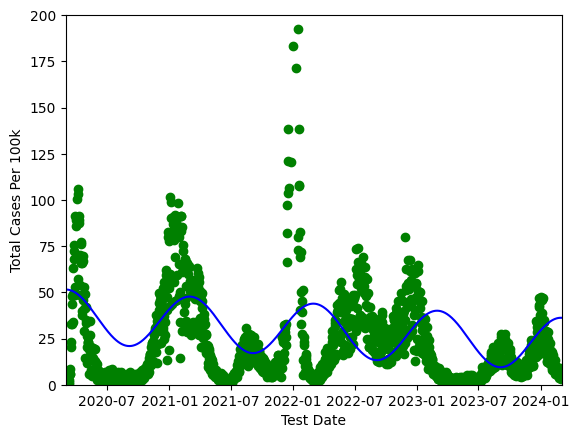

Tyler Passyn
I'm a 1st year CS student at Wake Forest. I am interesed in machine learning, AI, and statistical modeling.
I am also deeply interested in philosphy of religion and I read avidly.
You can reach me at email.
LinkedIn / GithubProjects
`
DESCRIPTION OF THE PROJECT AND YOUR INVOLVEMENT
ACKNOWLEDGMENT OF OTHERS/ORGANIZATION
Experience

Summer Apprentice at Simcoach Games: Summer 2023
Worked as an apprentice to design transformational games for neurodivergent students. These games were intended to teach practical skills and social skills. I and other apprentices received training on Unity, Maya, C#, and GitHub. I was the lead game designer and programmer for a group of apprentices. We created a game that taught basic pantry and grocery shopping skills. This project was then presented in front of 100 people at the end of the summer
Course Work - OPTIONALLY INCLUDE COURSEWORK TAKEN
WAKE
- CSC 112 (Fundamentals of Computer Science), Fall 2023.
- CSC 111 (Introduction to Computer Science), Spring 2024.
- CSC 201 (Data Struces and Algorithms), Fall 2024.